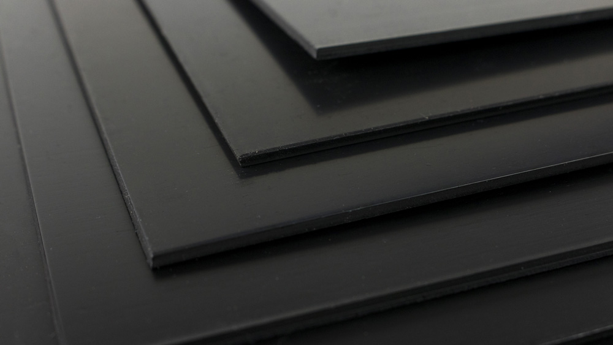
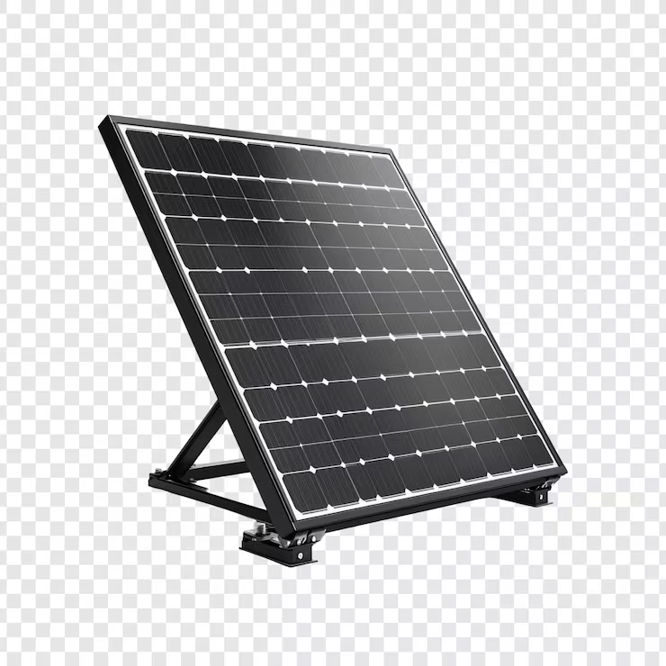

EstructuraHDPE de alta densidad
El polietileno de alta densidad es resistente a impactos, humedad y rayos UV. Su uso permite una carcasa robusta, fácil de limpiar y adecuada para contacto frecuente con residuos.
Fabricación responsable
La propuesta prioriza durabilidad, mantenimiento sencillo y componentes reemplazables para que el contenedor pueda operar en entornos urbanos y escolares.

EstructuraEl polietileno de alta densidad es resistente a impactos, humedad y rayos UV. Su uso permite una carcasa robusta, fácil de limpiar y adecuada para contacto frecuente con residuos.

EnergíaLa alimentación principal del prototipo se plantea mediante panel solar. La batería LiFePO4 de 12 V y 7 Ah funciona como almacenamiento y respaldo para mantener operación estable cuando baja la luz.
Las compuertas, paneles y bandejas se plantean como piezas modulares para facilitar reparación, sustitución y escalamiento del prototipo.
La cámara, sensores, cableado y unidad de procesamiento se aíslan del área de residuos mediante compartimentos secos y accesibles.
Criterios de diseño
Soporta golpes, limpieza frecuente y exposición parcial al exterior.
Acceso separado a residuos y electrónica para reducir tiempos de servicio.
Compuertas con bloqueo cuando hay falla de sensor, cámara o motor.
La estructura puede adaptarse a más categorías o distintos volúmenes.